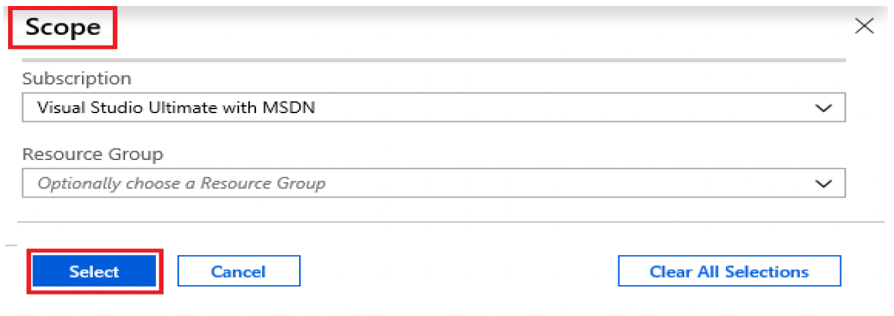
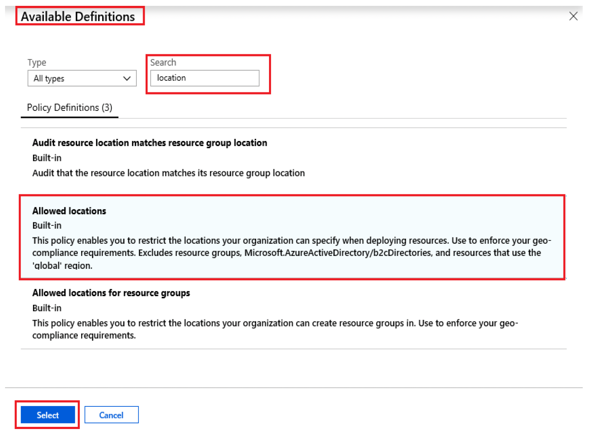
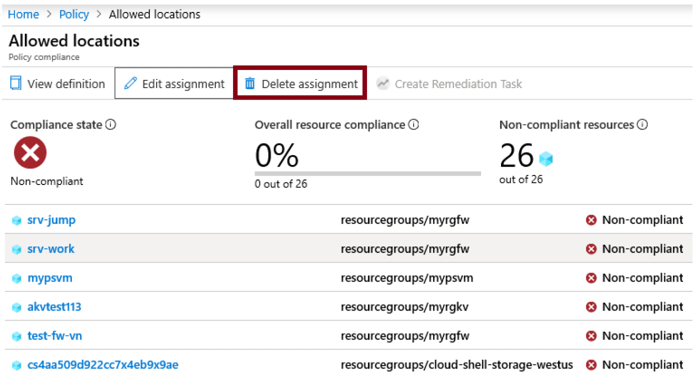

Lab 5:Create an Azure Policy (10 min)
In this Lab, we will create an Azure Policy to restrict deployment of Azure resources to a specific location.
Task 1: Create a Policy assignment
In this task, we will configure the allowed location policy and assign it to our subscription.
1 - Sign in to the Azure portal.
2 - From the All services blade, search for and select Policy, under the Authoring section click Definitions. Take a moment to review the list of built-in policy definitions. For example, in the Category drop-down select only Compute. Notice the Allowed virtual machine size SKUs definition enables you to specify a set of virtual machine SKUs that your organization can deploy.
3 - Return to the Policy page, under the Authoring section click Assignments. An assignment is a policy that has been assigned to take place within a specific scope. For example, a definition could be assigned to the subscription scope.
4 - Click Assign Policy at the top of the Policy - Assignments page.
5 - On the Assign Policy page, keep the default Scope.
| Setting | Value |
|---|---|
| Scope | Use default selected |
| Policy definition | Click ellipses, then search Allowed Locations, then Select |
| Assignment name | Allowed Locations |

6 - On the Parameters tab, select Japan West. Click Review + Create, and then Create.
Note: A scope determines what resources or grouping of resources the policy assignment applies to. In our case we could assign this policy to a specific resource group, however we chose to assign the policy at subscription level. Be aware that resources can be excluded based on the scope configuration. Exclusions are optional.
Note: This Allowed Locations policy definition will specify a location into which all resources must be deployed. If a different location is chosen, deployment will not be allowed. For more information view the Azure Policy Samples page.

7 - The Allowed locations policy assignment is now listed on the Policy - Assignments pane and it is now in place, enforcing the policy at the scope level we specified (subscription level).
Task 2: Test Allowed location policy
In this task, we will test the Allowed location policy.
1 - In the Azure Portal, from the All services blade, search for and select Storage accounts, and then click + Create.
2 - Configure the storage account (replace xxxx in the name of the storage account with letters and digits such that the name is globally unique). Leave the defaults for everything else.
| Setting | Value |
|---|---|
| Subscription | Use default SUPPLIED |
| Resource group | myRGPolicy (create new) |
| Storage account name | storageaccountxxxx |
| Location | (US) East US |
3 - Click Review + Create and then click Create.
4 - You will receive the deployment failed error stating that resource was disallowed by policy, including the Allowed locations policy name.
Task 3: Delete the policy assignment
In this task, we will remove the Allowed location policy assignment and test.
We will delete the policy assignment to ensure we are not blocked on any future work we wish to do.
1 - From the All services blade, search for and select Policy, and then click your Allowed locations policy.
Note: On the Policy blade, you can view the compliance state of the various policies you have assigned.
Note: The Allowed location policy may show non-compliant resources. If so, these are resources created prior to the policy assignment.
2 - Click Allowed Locations, it will open an Allowed locations Policy Compliance window.
3 - Click Delete Assignment in the top menu. Confirm you wish to delete the policy assignment by clicking Yes.

4 - Try to create another storage account to ensure the policy is no longer in effect.
Note: Common scenarios where the Allowed locations policy can be useful include:
- Cost Tracking: You could have different subscriptions for different regional locations. The policy will ensure that all resources are deployed in the intended region to help cost tracking.
- Data Residency and Security compliance:: You could also have data residency requirements, and create subscriptions per customer or specific workloads, and define that all resources must be deployed in a particular datacenter to ensure data and security compliance requirements.
Congratulations! You have created an Azure Policy to restrict deployment of Azure resources to a particular datacenter.
Note: To avoid additional costs, you can optionally remove this resource group. Search for resource groups, click your resource group, and then click Delete resource group. Verify the name of the resource group and then click Delete. Monitor the Notifications to see how the delete is proceeding.